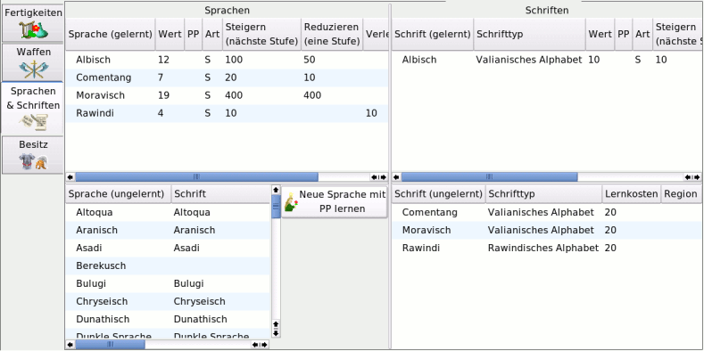
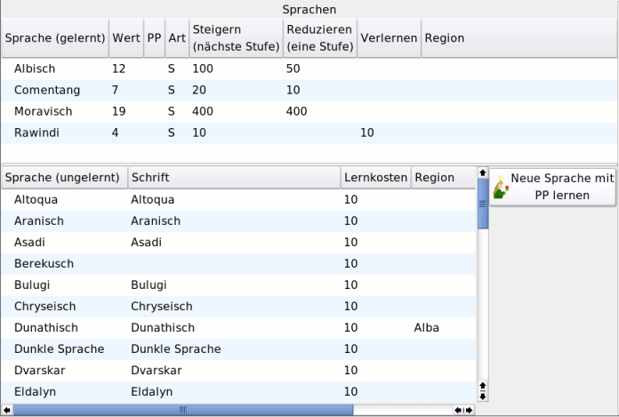
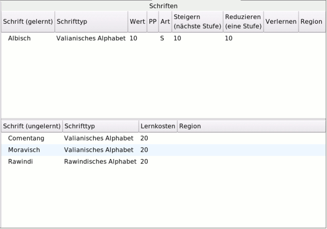

MAGUS - Hilfe
|
Bedienung |
|||||||||||||||
Sprachen & Schriften |
||||||||||||||||
| Zum Seitenanfang | ||||||||||||||||
Notebookseite Sprachen & Schriften |
||||||||||||||||
| Zum Seitenanfang | ||||||||||||||||
AllgemeinDie Notebookseite "Sprachen & Schriften" werden diese erlernt und gesteigert.Es existieren vier Fenster. die linken Fenster dienen zum Erlernen und Steigern von Sprachen, die beiden rechten Fenster dem Erlernen und Steigern von Schriften. |
||||||||||||||||
| Zum Seitenanfang | ||||||||||||||||
Buttons
|
||||||||||||||||
| Zum Seitenanfang | ||||||||||||||||
Sprachen Das Erlernen und Steigern von Sprachen erfolgt mit der Hilfe zweier Fenster: Das untere Fenster enthält eine Liste aller erlernbarer Sprachen. Neben dem "Namen der Sprache", den "Lernkosten" und der "Region", wird zusätzlich die zur Sprache gehörende Schrift angezeigt. Das erlernen einer Sprache erfolgt durch einmaliges Anklicken.der Sprache Im oberen Fenster stehen die erlernten Sprachen. Erst nachdem eine Sprache erlernt wurde, kann die dazugehörige Schrift gelernt werden und erscheint im entsprechenden Auswahlfenster. Steigern: Ist der Steigern-Button aktiviert, so wird durch einmaliges(!) Anklicken der entsprechenden Sprache ihr Erfolgswert um 1 erhöht. Die hierfür aufzuwendenden Erfahrungspunke werden in der Spalte "Steigern (nächste Stufe)" angezeigt. Reduzieren: Wurde der Reduzieren-Button aktiviert, so wird durch einmaliges(!) Anklicken der entsprechenden Sprache ihr Erfolgswert um 1 gesenkt, sofern der Erfolgswert größer als der Minimalwert der Sprache ist. Der FP-Betrag wird in Form von AEP gutgeschrieben. Der FP-Betrag, den eine Reduktion "freisetzt" wird in der Spalte "Reduzieren (eine Stufe)" angezeigt. Ist eine weitere Reduktion nicht möglicht, so ist diese Spalte leer. Verlernen: Eine Sprache, die auf ihrem minimalen Erfolgswert beherrscht wird, kann durch einmaliges(!) Anklicken der gewünschten Sprache verlernt werden, wenn der Verlernen-Button aktiviert ist. Die hierbei anfallenden FP werden in der Spalte "Verlernen" angezeigt und beim Verlernen in Form von AEP gutgeschrieben. Wird in dieser Spalte kein Wert angezeigt, so kann diese Sprache nicht verlernt werden. Anmerkung: Die Möglichkeit zum Reduzieren und Verlernen von Sprachen dient in erster Line dazu, Fehleingaben zu korrigieren. In der Spalte PP werden Praxispunkte angezeigt, die für diese Sprache erworben und eingegeben wurden. |
||||||||||||||||
| Zum Seitenanfang | ||||||||||||||||
Schriften Es existieren auf der rechten Seite zwei Fenster zum Erlernen und Steigern von Schriften. Hier werden neben dem "Namen der Schrift", dem "Erfolgswert" der "Art",den "Kosten" und der Region zusätzlich den "Schrifttyp" an. Das obere Fenster zeigt die bereits gelernten Schriften. Steigern: Ist der Steigern-Button aktiviert, so wird durch einmaliges(!) Anklicken der entsprechenden Schrift ihr Erfolgswert um 1 erhöht. Die hierfür aufzuwendenden Erfahrungspunke werden in der Spalte "Steigern (nächste Stufe)" angezeigt. Reduzieren: Wurde der Reduzieren-Button aktiviert, so wird durch einmaliges(!) Anklicken der entsprechenden Schrift ihr Erfolgswert um 1 gesenkt, sofern der Erfolgswert größer als der Minimalwert der Schrift ist. Der FP-Betrag wird in Form von AEP gutgeschrieben. Der FP-Betrag, den eine Reduktion "freisetzt" wird in der Spalte "Reduzieren (eine Stufe)" angezeigt. Ist eine weitere Reduktion nicht möglicht, so ist diese Spalte leer. Verlernen: Eine Schrift, die auf ihrem minimalen Erfolgswert beherrscht wird, kann durch einmaliges(!) Anklicken der gewünschten Schrift verlernt werden, wenn der Verlernen-Button aktiviert ist. Die hierbei anfallenden FP werden in der Spalte "Verlernen" angezeigt und beim Verlernen in Form von AEP gutgeschrieben. Wird in dieser Spalte kein Wert angezeigt, so kann diese Schrift nicht verlernt werden. Anmerkung: Die Möglichkeit zum Reduzieren und Verlernen von Schriften dient in erster Line dazu, Fehleingaben zu korrigieren. In der Spalte PP werden Praxispunkte angezeigt, die für diese Schrift erworben und eingegeben wurden. Das untere Fenster zeigt die erlernbaren Schriften an. Erlernbar sind nur Schriften, deren zugehörige Sprache beherrscht wird. Es werden die "Schrift", der "Schrifttyp", die "Region" und die Lernkosten angezeigt. Das Erlernen der Schrift erfolgt durch einmaliges(!) Anklicken der gewünschten Schrift, wird diese erlernt und in das obere Fenster übertragen. |
||||||||||||||||
| Zum Seitenanfang |